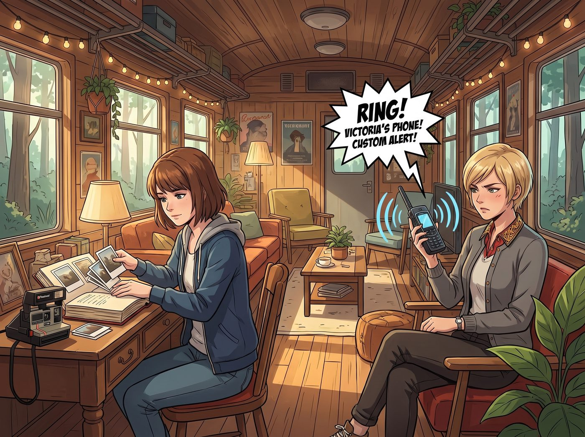

家族信託風暴

當 Max 將那五張物理存檔點小心翼翼地夾進日記本最深處時，車廂另一頭，Victoria 的私人衛星電話發出了極度尖銳的定製鈴聲。
一、資本的凝視
Victoria 放下補妝的鏡子，看了一眼來電顯示。原本因為保養得當而紅潤的臉色，在零點一秒內褪得乾乾淨淨，變成了一種毫無血色的慘白。
「是……是我祖父的私人信託管理人。」Victoria 握著電話的手微微發抖。在 Chase 財團龐大的權力金字塔裡，這個老頭代表著家族最高級別的資本審判。
她深吸了一口氣，按下了接聽鍵，並將聲音切換到了免持擴音，因為她覺得如果自己一個人聽，可能會當場暈厥。
「Victoria。」電話那頭傳來一個蒼老、優雅，卻帶著金屬般冰冷質感的英國口音。沒有任何寒暄，直奔主題。
「家族的合規審計委員會剛剛發現，妳名下的一個開曼群島空殼帳戶，在昨晚凌晨兩點，接收了一筆來自一間名為 Apex 物流的新創公司的加密貨幣轉帳。總計四百七十萬美金。」
Victoria 愣住了。她下意識地轉頭看向坐在螢幕前的 Lily。實習生正乖巧地喝著牛奶，甚至還朝她調皮地眨了眨眼睛。
電話那頭的聲音繼續平靜地凌遲著 Victoria 的神經：「不僅如此。這筆資金在進入妳的帳戶後，立刻被拆分成了一萬多筆微型交易，透過支付網路的結算漏洞，完美洗白，並最終匯入了一個位於華盛頓州奧林匹亞森林的……工業級核能變電站的繳費帳戶裡。」
老人的語氣終於出現了一絲極度危險的波動：「Victoria，妳最好給我一個合理的解釋。妳到底在西雅圖的森林裡秘密搞什麼名堂？為什麼聯邦通訊部門昨晚會突然對我們家族的境外帳戶展開例行審查？」
二、社交性的死刑判決
車廂裡死一般的寂靜。
「我……祖父，這是一個……非常複雜的環保投資項目……」Victoria 結結巴巴地試圖編造謊言，額頭上全是冷汗。
「別再用那些幼稚的謊言污辱我的智商。」老人冷冷地打斷了她，「我已經派人徹查過了。妳最近跟一群來歷不明的邊緣人混在一起——一個高中輟學的問題少女、一個滿嘴超自然妄想的攝影師，還有一個來路可疑的亞裔實習生。妳身為 Chase 家族唯一的第三代繼承人，居然放棄了紐約的社交圈與家族企業的培訓計畫，跑去跟這群人在鄉下的破車廂裡鬼混？」
「祖父，她們不是——」
「聽好了，Victoria。」老人的聲音變得無比冷酷，帶著不容置疑的絕對權威，「如果妳不在四十八小時內回到西雅圖，向家族委員會做出正式解釋，並且徹底切斷跟這群人的一切往來，我會在下個月的家族信託人年度晚宴上，當著所有 Chase 家族分支、所有妳從小到大認識的世交子女面前，正式宣布將妳從繼承序列裡除名，並公開說明原因——『因結交不良分子、行為失格而被家族放棄』。妳這輩子在整個東岸的老錢圈子裡，將再也抬不起頭。通話結束。」
「嘟——嘟——嘟——」
電話被無情地掛斷。
Victoria 虛脫地跌坐在沙發上，雙手捂住臉，肩膀劇烈地顫抖著。這個懲罰沒有任何實質的暴力，卻精準地刺中了她靈魂深處最恐懼的東西——被整個階級社會集體唾棄、社會性死亡的恐懼，遠比任何肢體威脅都更讓她感到窒息。
「他要在所有人面前，把我說成一個……行為失格的笑話。」Victoria 的聲音帶著哭腔，「我這輩子努力維持的一切，會在一個晚上被徹底摧毀。」
三、制定規則者的傲慢
Lily 皺起眉頭，立刻試圖用她一貫的方式介入。
「Chase 先生的說法在法理上存在著明顯的家族治理瑕疵，我可以協助起草一份……」Lily 的話還沒說完，桌上的電話又響了起來，這次接通的是視訊。
畫面裡的老人推了推金絲眼鏡，眼神銳利地看著螢幕，彷彿早已料到會有人試圖插手。
「妳一定就是那個實習生。」老人的聲音如同枯槁的樹皮，帶著絕對的資本傲慢，「我聽說妳很擅長玩弄法規漏洞。可惜，妳知道嗎？我在一九八五年，親自參與起草並遊說國會通過了現行大部分的家族信託與跨境資產保護條款。妳打算用我親手寫的規則，來威脅我？」
Lily 敲擊鍵盤的手指猛地停在了半空中。
「在絕對的資本所有權與社會地位面前，妳的那些行政黑魔法只不過是文書遊戲。」老人的聲音變得無比冷酷，「我不需要走任何法律程序。我只需要在一場晚宴上開口說幾句話，就能讓 Victoria 這輩子在整個上流社會裡萬劫不復。這不是妳能用一份法律文件解決的問題，小姑娘。」
視訊畫面被老人主動掛斷了。
車廂裡陷入了死寂。Lily 依然維持著剛才的姿勢，但她反光眼鏡後的大眼睛裡，第一次出現了明顯的錯愕與運算停滯。
她吃癟了。Lily 的合規魔法是建立在系統規則之上的，但如果對手就是規則的制定者，甚至掌握著法律觸及不到的社會性審判權力，她的法條再完美也無濟於事。
「完了……」Victoria 虛脫地喃喃自語，「這不是錢能解決的問題，也不是官司能解決的問題。他要毀掉的，是我這輩子在這個階級裡唯一的立足之地。」
Chloe 握緊了拳頭，卻不知道該往哪裡揮；Max 臉色蒼白，第一次感覺到這種純粹屬於"上流社會"的暴力，比任何機器狗或無人機都更讓人無力。
四、精準的求援
就在眾人陷入絕望時，Lily 緩緩放下了衛星電話。她深吸了一口氣，原本僵硬的肩膀放鬆了下來，嘴角重新勾起了一抹更加瘋狂的微笑。
「Victoria 學姐，」Lily 轉過身，十指在鍵盤上重新化作殘影，「資本與社會地位的確可以無視法規，但這種地位，同樣建立在某些脆弱的根基上。既然對手要用社會性死刑來審判妳，那我需要找一個能精準打擊他真正在乎的東西的人來助拳。」
她點開了一個隱藏的加密終端，直接向某個特定的支付網關發送了一筆〇點〇一美金的微型交易。交易備註只有簡短的一行字：「SOS。老錢想用社交處決碾壓我方。需要精準打擊支援。」
三秒鐘後，二號車廂的大螢幕閃爍了一下，一個極度清晰的加密視訊畫面彈了出來。畫面中，Mr. V 穿著考究的西裝，正端著一杯手沖咖啡，看到螢幕上的 Lily，他那張冰冷的菁英臉上瞬間綻放出了知音難覓的熱烈笑容。
「Lily 小姐！怎麼了，聽起來很嚴重？」
Lily 軟糯的聲音裡帶著一絲罕見的殺氣，長話短說地把整件事的來龍去脈說了一遍。
Mr. V 聽完，原本熱情的笑容瞬間收斂，眼神變得像刀鋒一樣銳利。「用家族聲譽威脅晚輩，這種老派的手段，我見得多了。」他冷哼一聲，「Lily 小姐，請把這位 Chase 先生的個人持股清單發給我。我要找到他真正在乎的那顆珍珠。」
五、精準的以牙還牙
「已經發送了。」Lily 說，「您打算怎麼做？」
「我剛才查了一下，這位老先生名下有一家他一手創辦、經營了四十年、被他視為畢生心血結晶的精品投資銀行，去年才剛完成一輪私募融資，估值正處於巔峰。」Mr. V 的雙手在虛擬鍵盤上飛速敲擊，臉上露出了與 Lily 如出一轍的瘋狂笑容，「他想用『家族聲譽』這種無形的東西壓垮 Victoria 小姐，那我就讓他嚐嚐，當自己最珍視的有形資產搖搖欲墜時，是什麼滋味。」
「我剛剛在支付清算網路裡，對這家投資銀行過去半年的跨境結算記錄進行了一次合規複核，並發現了三筆疑似觸及反洗錢紅線的可疑交易。」Mr. V 一邊操作，一邊解釋，「我不會直接舉報，我只會把這份初步複核報告，透過官方管道，正式通知這家銀行的董事會與主要機構投資人，告知他們『例行合規審查即將展開』。」
「這樣做的效果是？」Lily 好奇地問。
「機構投資人最怕的就是不確定性。」Mr. V 微笑著回答，「光是『即將接受合規審查』這幾個字，就足以讓那些謹慎的機構股東開始重新評估他們的持股。這位老先生引以為傲的估值，接下來幾週恐怕會經歷一場令人不太愉快的震盪。這不是要摧毀他，只是讓他明白，任何人的城堡，都有一道沒鎖好的側門。」
三十秒後，Victoria 放在桌上的衛星電話再次響了起來。
Victoria 顫抖著手接通電話。這一次，電話那頭的信託管理人再也沒有了剛才那種高高在上的傲慢，語氣裡帶著一絲不易察覺的緊繃。
「Victoria，妳……最近跟什麼奇怪的人有接觸嗎？我剛才接到消息，我們家的銀行可能要面臨一次不必要的合規審查風波，這對我們最近的融資輪次會造成很大的困擾。」
Victoria 看了看螢幕上正和 Lily 相視而笑的 Mr. V，嚥了一口口水，突然覺得底氣前所未有地充足。
「祖父，」Victoria 撩了一下頭髮，恢復了名媛的高傲，「我只是想讓您知道，每個人珍視的東西，都有可能在一夕之間變得不穩定。至於剛才您說的那場晚宴發言……我建議您再重新考慮一下。」
Victoria 頓了頓，語氣裡帶著前所未有的堅定：「我不會離開這裡，也不會跟我現在的朋友斷絕往來。如果您堅持要在晚宴上羞辱我，那麼，接下來會發生什麼事，恐怕就不是我能控制的了。」
Victoria 毫不猶豫地掛斷了電話，感覺渾身的毛孔都舒暢了。
六、意外的溫柔插曲
「精準的以牙還牙，Mr. V。」Lily 滿意地端起牛奶敬了一下鏡頭。
「這是我的榮幸，Lily 小姐。」Mr. V 優雅地微微欠身。
Chloe 呆呆地看著螢幕，喃喃自語：「老天，這兩個人如果結婚，生下來的孩子是不是能直接用算盤統治地球？」
這時，Kate 繫著圍裙走到螢幕前，對著 Mr. V 露出了一個充滿聖光的微笑。「V 先生，謝謝您又一次保護了大家。您就像是住在電腦螢幕裡的守護騎士呢。雖然您平時工作一定很辛苦，但請務必按時吃飯。下次如果您有空來西雅圖，我一定給您烤最好吃的蘋果派。」
面對這突如其來的純潔直擊，冷酷無情的全球風控架構師 Mr. V 竟然愣住了，冷峻的臉上泛起了一絲可疑的紅暈。
「咳……感謝您的邀請，Kate 小姐。我……我會把這項行程加入我的最優先級排程中。」
而 Victoria 坐在沙發上，看著這群瘋瘋癲癲卻真心為她挺身而出的傢伙，第一次由衷地覺得，比起那個冰冷的家族頭銜，這節廢舊的車廂，或許才是她真正想守護的地方。